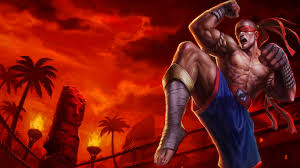
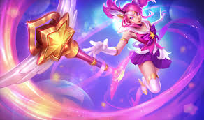
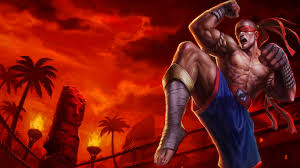
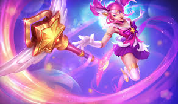
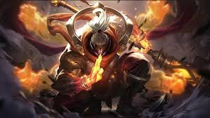
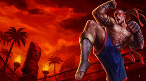
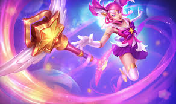
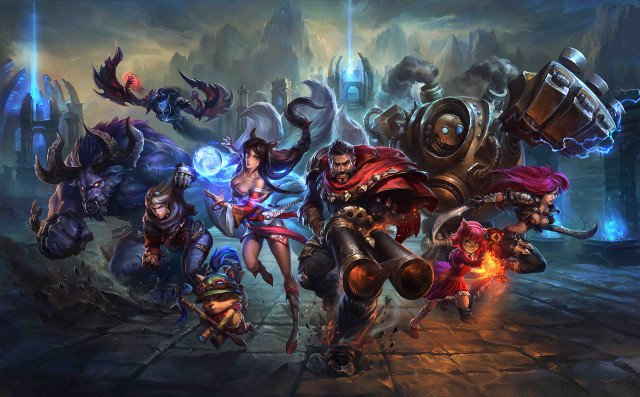
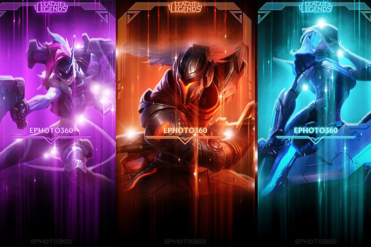

2. Thể loại game nhập vai xuất sắc, dễ chơi.


2. Thể loại game nhập vai xuất sắc, dễ chơi.
I. 7 lí do bạn nên chơi liên minh huyền thoại. 1. Thể loại game chiến thuật vô cùng hấp dẫn.
Đầu tiên nhắc đến Liên Minh Huyền Thoại chúng ta phải thừa nhận đây là một game chiến thuật vô cùng hấp dẫn. Người chơi muốn dành chiến thắng phải có tư duy chiến thuật tốt hơn đối phương. Không phải cứ lao vào đánh nhau như thiêu thân và phải biết lúc nào nên tấn công lúc nào nên phòng thủ, khi nào thì đẩy lính, khi nào thì tụ lính, lúc nào thì ăn rồng khi nào thì không nên ăn, khi nào thì nên gank khi nào thì không nên gank, ngoài ra người chơi còn phải biết đọc trận đấu, cắm mắt phán đoán hướng di chuyển của đối thủ để đưa ra các quyết định hợp lí, đồng thời các đồng đội phải phối hợp một cách chính xác. Tất cả những điều này giúp phát huy được tối đa tư duy chiến thuật của các game thủ.



2. Thể loại game nhập vai xuất sắc, dễ chơi.
Liên Minh Huyền Thoại ngoài là game chiến thuật thì còn là một game nhập vai vô cùng xuất sắc. Mỗi game thủ sẽ vào vai một vị tướng trong liên minh để chơi. Mỗi vị tướng đều khác nhau có ưu điểm khuyết điểm riêng và có một bộ kĩ năng riêng. Tuy game này rất dễ chơi bạn chỉ phải sử dụng một vài phím nhất định kết hợp với chuột để điều khiển nhưng muốn thành thạo các kĩ năng cũng không phải là điều dễ dàng. Trong Liên Minh Huyền Thoại không có vị tướng nào là mạnh nhất cả, vị tướng của bạn có mạnh hay không hoàn toàn tùy thuộc vào kĩ năng cá nhân của bạn. Điều này khiến Liên Minh Huyền Thoại trở thành một game nhập vai tuyệt vời.  
3. Đồ họa đẹp mắt.Trong thời buổi công nghệ hiện nay đồ họa đẹp mắt là điều không thể thiếu trong game. Nếu như game hấp dẫn mà không bắt mắt thì cũng khó mà có thể phát triển được. Với đồ họa 3D mới nhất, Liên Minh Huyền Thoại hoàn toàn thỏa mãn được điều đó. Bạn có thể trải nhiệm cảm giác vô cùng chân thực trong game. Chưa kể trong Liên Minh Huyền Thoại còn có các bộ trang phục khác nhau cho cùng một vị tướng khiến nó trở nên rất thú vị.
4. Nội dung game hay.Nội dung game kể về cuộc chiến giữa hai vùng đất huyền bí từ xa xưa. Cụ thể trong game bạn phải tấn công đánh phá các cứ điểm và mục đính cuối cùng là phải phá được nhà chính của đối phương. Điều đó hình thành nên những pha tấn công, pha phòng thủ vô cùng căng thẳng và đẹp mắt. Và đôi khi có những kết thúc khá bất ngờ tưởng chừng thắng đến nơi rồi mà cuối cùng vẫn thua. Ở trong game hầu như giao tranh diễn ra liên tục với nhịp độ nhanh chứ không phải trì trệ fam như một số game khác, điều này giúp đề cao được tính giải trí của game. Đặc biệt mỗi vị tướng trong game đều có một câu chuyện riêng nên đôi khi game thủ nào đa cảm sẽ cảm thấy nó rất thú vị và có cảm giác như mình là truyền nhân của một vị thần xa xưa nào đó.
5. Meta game thay đổi liên tục, các tướng mới ra liên tục.Nhiều người than phiền vì meta game thay đổi liên tục. Nhưng thật ra chính điều đó đã làm nên điểm hấp dẫn của game. Bạn phải biết đến sơn hào hải vị ăn mãi còn thấy chán huống chi là game. Với việc thay đổi liên tục và các tướng mới ra liên tục giúp game thủ không bị nhàm chán mà thỏa sức khám phá những điều mới mẻ trong game. Có thể một vị tướng bạn chưa từng chơi bao giờ nhưng khi meta game thay đổi vị tướng đó có thể trở nên nổi trội hấp dẫn người chơi. Và những tướng mới khi ra thì luôn kích thích trí tò mò của người chơi không biết kĩ năng của nó thế nào, không biết nó có mạnh hay không.
6. Hệ thống đấu rank kích thích người chơi.Hệ thống đấu rank xếp hạng của game cũng là một yếu tố kích thích người chơi. Con người luôn hiếu thắng, trong bất cứ việc gì cũng vậy kể cả là trong game. Ai cũng muốn đứng trên người khác. Nếu chỉ là một game đơn thuần ai cũng chơi như ai thì khó làm nên sức hấp dẫn của game như vậy. Hệ thống đấu xếp hạng khiến Liên Minh Huyền Thoại không chỉ là một game đơn thuần mà còn là chỗ để các game thủ thể hiện bản lĩnh và tài năng của mình. Và tất nhiên là bậc thách đấu sẽ được trọng vọng và nể phục hơn bậc đồng đoàn rồi.
7. Hầu như không có hack.Tuy hiện nay việc sử dụng tool trong game khá phổ biến nhưng để hack được game là rất khó. Sử dụng tool cũng chỉ có thể giúp đỡ bạn phần nào trong game chứ không thể khiến bạn trở nên bá đạo được. Chính tính bảo mật chặt chẽ này cũng đã tạo ra một môi trường chơi game lành mạnh và công bằng. Hy vọng trong tương lai Riotgame cũng sẽ tìm ra cách để ngăn chặn việc sử dụng tool.
II. Một vài video hay nhất và đình đám nhất 2019:Thông Tin Liên Hệ
Hotline: 0383498833
Không dùng facebook và email